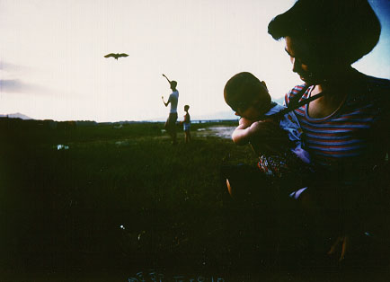

義助慰安婦
—— 李敖百件珍藏義賣藝術品（第55件）
品 名： E5. 梁居正攝影「夢──台北淡水河畔」 預估價： 6 萬 成交價： 6 萬 說 明： 《台灣行腳》這本書是梁居正的攝影集，由黃金鐘主編撰文；這是一本了不起的關於台灣的攝影集。梁居正是外省人，但非常愛台灣，走過台灣大街小巷、荒山僻野，照了好多好的照片，是一個苦幹實幹的攝影家。這幅是他的太太抱兒子在淡水河畔看放風箏的作品；後來他的兒子死了，他把照片沖洗出來，全世界只有一張，給李敖買了下來。從這幅作品可看出他了不起的攝影技術，及人生中所遭遇的喪子之痛。
